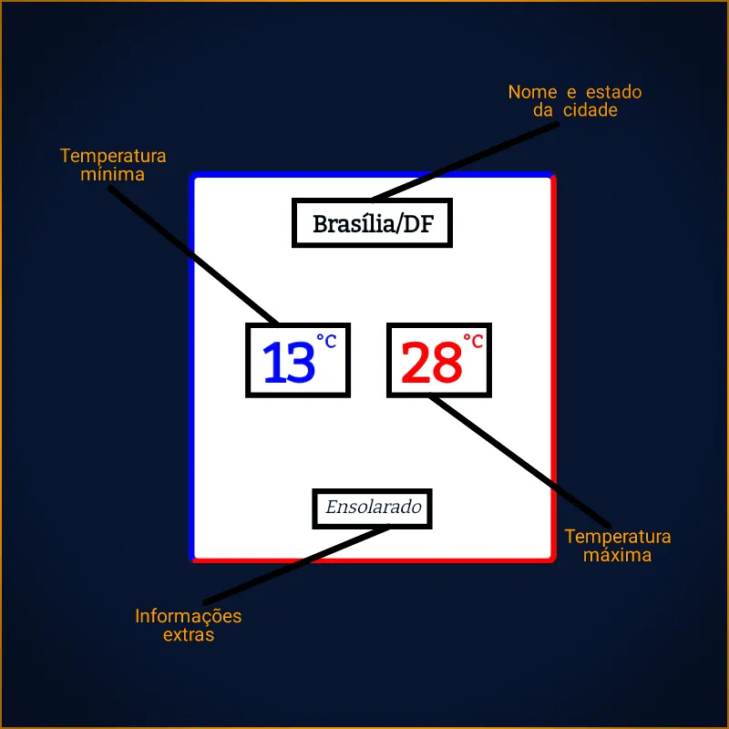

Saiba a Previsão do Tempo de Sua Cidade em Alguns Segundos!!
Dúvidas Recorrentes
Aqui vão algumas dúvidas que podem aparecer, durante o uso do site. Caso não encontre o que precise, entre em contato comigo para que eu possa resolver seu problema.
Clima Web é um site desenvolvido pelo Pedro Henrique Santos Braga, com o intuito de levar a Previsão do Tempo de todas as cidades do Brasil e do mundo.
Os dados são constantemente atualizados para sempre mostrar informação certa a quem pesquisar.
Este site é seguro?
Sim!! O site foi feito pensando na segurança do usuário. Nós não pegamos, salvamos e nem distribuímos informações de nossos usuários. Nós só usamos o nome de sua cidade e mais nada para trazer a Previsão do Tempo atualizada.
Como posso usar o Clima Web?
É muito simples utilizar nosso site, basta apenas digitar o nome da sua cidade corretamente (sem abreviações e com todos os acentos e pontuações) e esperar alguns segundos e pronto!! Previsão do Tempo aparecerá na tela.
É possível pesquisar cidades de outros países?
Sim, é possível pesquisar a previsão do tempo de vários países como Estados Unidos, Canadá, Argentina, Rússia, China, entre muitos outros países.
As informações do site são confiáveis?
Sim, todos os dados são pegos de uma fonte confiável. A chance de uma previsão do tempo de um período de 24 horas estar certa é de 90%, estão pode confiar na nossa previsão!
De onde as informações vem?
Todos os dados são obtidos da API da AccuWeather, um site super confiável, que sempre mostra a previsão certa.
Preciso pagar para usar seu serviço?
Não, você não precisa me pagar nenhum centavo para usar o serviço de previsão do tempo, mas, caso queira doar algum valor em dinheiro para mim, eu ficarei muito grato. Caso queira realizar um doação a mim, acesse uma de minhas redes sociais e me avise.
O que são essas informações na tela?

Não consigo encontrar minha cidade. Por quê?
Podem haver vários motivos, entre eles estão:
Você digitou incorretamente o nome da cidade, verifique se você digitou o nome certo.
Nós atingimos o limite de acessos na API, caso esse seja o problema, peço desculpas pelo incoveniente, estou tentando resolver essa questão o mais rápido possível.
Sua cidade pode não estar cadastrada na API, caso acredite que esse seja o problema, fale com o suporte da API e peça para que eles adicionem sua cidade em seu banco de dados.
Sua conexão pode estar lenta ou indisponível.
Com qual frequência as informações são atualizadas?
As informações são atualizadas em aproximadamente 24 horas, sendo que após às 18:00 horas, os dados da noite são exibidas e a partir das 6 da manhã às informações exibidas são da manhã.
Esse site pode ser usado no celular?
Sim, o site foi feito para funcionar em celulares, tablets, notebooks e vários outros dispositivos. Tudo foi feito pensando na melhor experiência para o usuário.
Como posso contribuir com este projeto?
Você pode me ajudar a desenvolver este projeto entrando em meu GitHub. Para ajudar no projeto você não precisa saber programação, basta sugerir alguma melhoria para o site que eu adiciono com todo o prazer.
Lembrando que esse projeto só tem uma pessoa envolvida, então sua sugestão pode não ser adicionada em um curto período de tempo.
Posso usar o código desse site em meus projetos?
Pode, desde que você siga a licença MIT, que a licença que está sob o site. Além disso, deve-se falar comigo antes de usá-lo. Caso a licença seja descumprida, poderá ser penalizado.